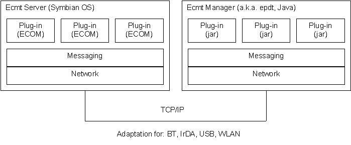
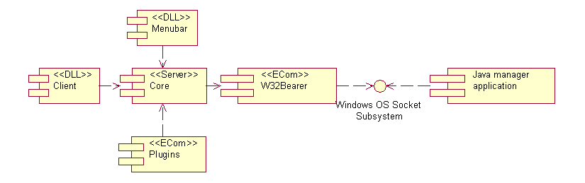
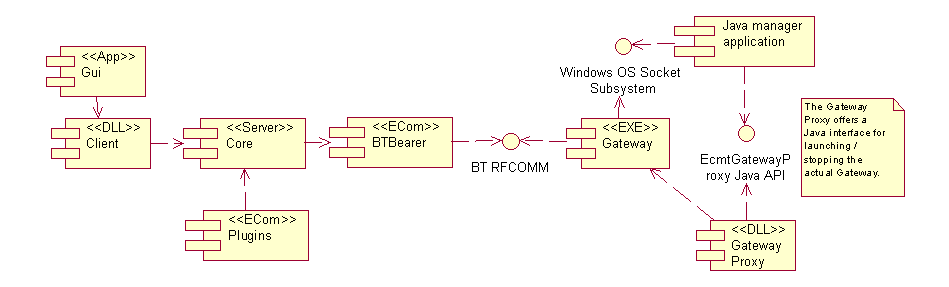

| Ecmt Framework Server Documentation |
The configuration and monitoring framework (Ecmt) is the architectural framework for developing tool plugins to Series 60 platform. It is composed of a standalone Java manager application running on the PC and a Symbian OS server running in the emulator or terminal. Both components manage the lifecycle of plugins and offer messaging services to plugins. In Symbian OS the plugins are ECom plugins while in the Java component the plugins are separate .jar files. The configuration and monitoring framework is used to implement the diagnostics, preferences and utilities functions of the SDK.
The picture below shows the general architecture of the framework.

This is the documentation for the Configuration and Monitoring Framework (Ecmt) Symbian OS server running in the emulator or Series 60 devices. It offers a C++ plugin interface with which it is possible to integrate new manageable objects to the platform. The plugins are Symbian OS ECom plugins that are loaded to the Ecmt server process, and, therefore, cannot have a UI . The plugins can exploit the messaging capabilities of the framework to send and receive messages from/to the Java plugins of the Ecmt Manager running on the PC.
The Ecmt framework works with both the emulator and a Series 60 device. The Symbian toolchain (with suitable flag definitions in code and project definition files) takes care of all the differences between these two scenarios. The following sections explain the general architecture of the components of the Ecmt server The details are found in the Modules section of the documentation.
The following diagram depicts the components and their dependencies in the context of the emulator:

The components are:
Two components of the Series 60 platform need to be changed:
The EKERN.DLL modification is required to be able to load the menubar component at emulator startup. The STARTER.RSC is modified to add the Ecmt core to the emulator startup list. Both modifications are implemented in the scripts found in the Ecmt\platform_mod directory of the codebase.
In the context of the Series 60 device the component view is as follows:

The components are:
Symbian package files (.pkg) exist for creating the .sis files needed to instal the core, client, gui, BTBearer and all plugins to the device.
© Nokia 2004